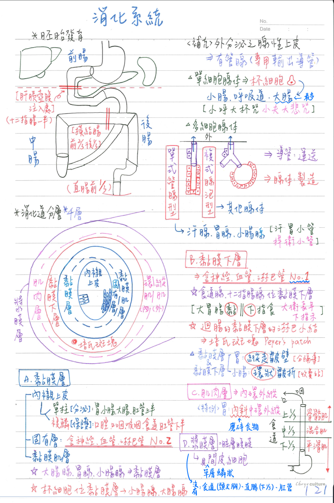
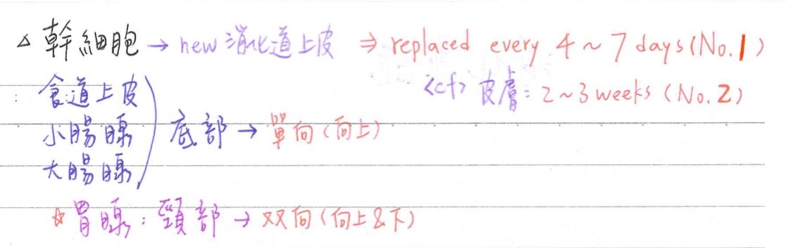
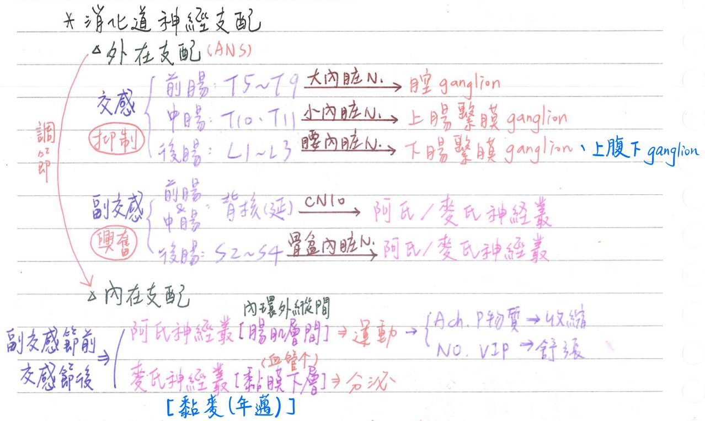
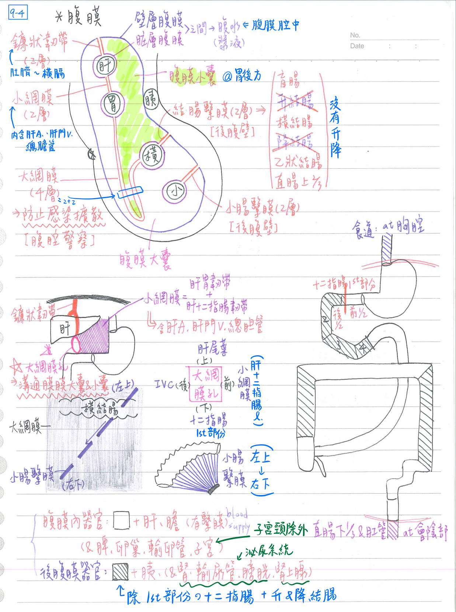
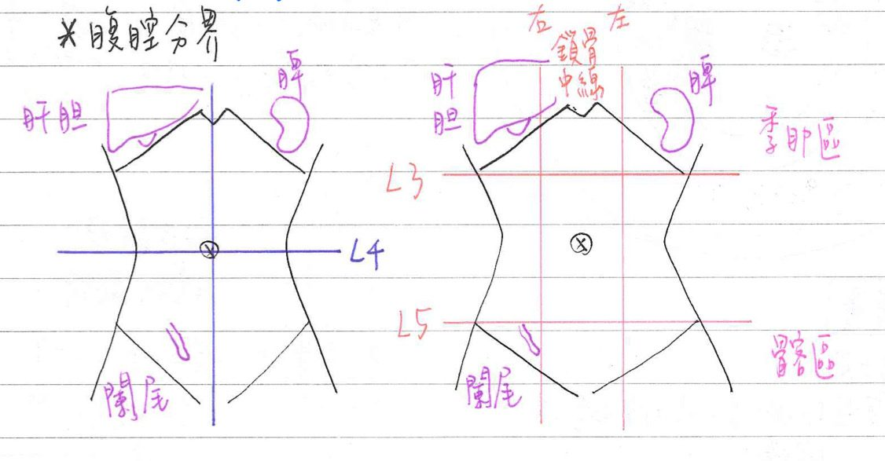

🍣 消化系統-基本結構
胚胎發育
- 前腸(胃、肝、膀、胰、12指腸上半)：腔動脈幹(celiac)供應
- 中腸(小腸~橫結腸前2/3)：上腸繫膜動脈幹(SMA)供應
- 後腸(橫結腸後1/3~直腸上1/3)：下腸繫膜動脈幹(IMA)+內髂A(直腸下2/3)供應
消化道的基本結構[組織學]
消化道具四層結構：(內→外) [FC說五層啦]
- 黏膜層(mucosa)：分泌(secretory)、吸收(absorptive)、保護(barrier)功能
- 內襯上皮(lining epithelium)：
- 單層柱狀(分泌)：胃、小腸、大腸、肛管上半
- 複層鱗狀(保護；和外界互通的部分)：口腔、咽(口咽/喉)、食道、肛管下半
- 杯細胞：位於小腸、大腸之黏膜層(含量：12指腸<空腸<迴腸<大腸)
- 固有層(lamina propria)：含神經/血管/淋巴管 [第二多]
- 胃腺、小腸腺(Lieberkuehn)、大腸腺：位於黏膜層
- 小腸：特具絨毛(villi)、乳糜管(lacteal)=微淋巴管
- 富含司專一性免疫之淋巴組織，其中漿細胞主要產生IgA
- 培氏斑塊(Peyer patch)：迴腸特具淋巴小結聚集而成；黏膜(固有)層&黏膜下層
- 黏膜肌層(muscularis mucosae)：內環肌-外縱肌排列 [內環外縱]
- 黏膜肌層為黏膜層與黏膜下層之界線
- 內襯上皮(lining epithelium)：
- 黏膜下層(submucosa)：含最多之神經血管/淋巴管 [第一多]；血流量最大
- 食道腺、十二指腸腺(Bruenner)：位於黏膜下層
- 胃：特具縱走皺壁(rugae)；小腸：特具環狀皺折(plica circularis)
→均由黏膜層&黏膜下層(為主)所構成備註
FC p.116：rugae以黏膜下層為主
- 肌肉層(muscularis externa)：
- 一般2層： [內環外縱]
- 環肌：收縮產生分節運動(segmentation)→攪拌食糜
- 縱肌：收缩產生蠕動(peristalsis)→以推進食糜
- 胃具3層：內斜-中環-外縱肌(中層最厚；內斜for磨碎食物)
- 食道上1/3為骨骼肌；食道中1/3為混合肌；食道1/3為平滑肌
- 一般2層： [內環外縱]
- 漿膜層(serosa)=臓層腹膜(visceral peritonem)：
- 具單層鱗狀之間皮細胞(mesothelium)
- 食道(頸段&胸段)、直腸(下1/3)、肛管：無漿膜層→[hint：不在胸腔&腹腔的地方]
- [FC]外膜(adventitia)：由結締組織構成
- 見於管壁直接附著or固定在鄰近構造處(EX：體壁or某些腹膜後器官)

消化道具四層結構：(內→外)
- 幹細胞(stem cell)：分生出新的消化道上皮；[重點]Replaced every 4~7 days(全身細胞替換率NO.1)💡
細胞替換率NO.2：皮膚(2-3weeks)
- 食道上皮的底層(basal layer)：單向生長(向上)
- [例外]胃腺的頸部(neck of gastric glands)：雙向生長(向上&向下)
- 腸腺的底部(bottom)：單向生長(向上)
- 大腸腺窩(crypts)的底部(bottom)：單向生長(向上)
| 黏膜層 | 黏膜下層 | 肌肉層 | 漿膜層 | |
|---|---|---|---|---|
| 食道 | ★非角化複層鱗狀 食道賁門腺(@基底層) | ★食道本體腺 神經、血管、淋巴管 | 內環、外縱 ★上1/3：骨骼肌 中1/3：混合肌 下1/3：平滑肌 | ★胸段食道無 進腹腔後由臟層腹膜覆蓋 |
| 胃 | 單層柱狀 ★[109-2]縱走皺壁(rugae) 胃腺=胃底線 | 神經、血管、淋巴管 縱走皺壁(rugae) | 內斜、中環、外縱 平滑肌 | 臟層腹膜 小彎側：小網膜 大彎側：大網膜 |
| 小腸 | 單層柱狀 環狀皺折 絨毛、微絨毛 小腸腺 @黏膜肌層 =[Lieberkuhn's gland] 杯細胞 | ★★[109-2]12指腸腺 =[Brunner’s gland)] 神經、血管、淋巴管 環狀皺折 | 內環、外縱 平滑肌 | 臟層複膜 腸繫膜 (12指腸第2~4部份僅前方覆蓋) |
| 大腸 | 單層柱狀 ★[108-1]杯細胞 大腸腺 | 神經、血管、淋巴管 | 內環、外縱 平滑肌 結腸袋、結腸帶 | 臟層腹膜 結腸繫膜 橫結腸側：大網膜 升結腸、降結腸：僅前方覆蓋 |
| 肛管 | 上2/3：單層柱狀； ★[108-1]杯細胞 下1/3：複層鳞狀 | 神經、血管、淋巴管 | 內環、外縱 內括約肌：平滑肌 外括約肌：骨骼肌 | 無 |

消化道-神經支配★[108-1]
- 外在(extrinsic)支配=自主神經系統(autonomous nervous system, ANS)
- 交感神經(sympathetic)：抑制消化道之運動、分泌
- 前腸：T5~T9(大內臓N)→腔神經節
- 中腸：T10~T11(小內臓N)→上腸繫膜神經節
- 後腸：L1~L2(腰內臓N)→下腸繫膜神經節 & 上腹下神經節(直腸下2/3+肛管上1/2)
💡<cf>最下內臟N(T12)：→腎神經節：支配腎
- 副交感神經(parasympathetic)：興奮消化道之運動分泌
- 前腸、中腸：迷走神經背核(迷走N)→阿氏/麥氏神經叢
- 後腸：S2~S4(骨盆內臓N)→阿氏/麥氏神經叢、下腹神經節(直腸下/肛管上)
- 交感神經(sympathetic)：抑制消化道之運動、分泌
- 內在(intrinsic)支配=腸神經系統(erteric nervous system, ENS)：
- 阿氏神經叢(Auerbach's plexus)：調節平滑肌運動
- 位肌肉層(在内環&外縱之間)
- 分泌的神經傳導物質：Ach、P物質→收缩；NO、VIP→舒張
- 位肌肉層(在内環&外縱之間)
- 麥氏神經叢(Meissner's plexus)：調節腺體分泌
- 位黏膜下層
- 腸神經系統：接受副交感節前&交感節後之支配
- 阿氏神經叢(Auerbach's plexus)：調節平滑肌運動

腹膜(peritoneum)：[重點]最大的漿膜 [大小：腹膜>肋膜>心包膜]
- 壁層(parietal layer)：緊貼腹壁
- 臟層(viscereral layer)：緊貼內臓
- 腹膜腔：臟層與壁層腹膜之間的空腔，內含漿液(腹水, ascites)
- 男性的腹腔(peritoneal cavity)是完全封閉的；
女性的腹腔(peritoneal cavity)是部份開放的(輸卵管之漏斗部) - ★[109-2]腹膜腔之最低點：直腸子宮窩/道氏窩(Douglas pouch)
腹膜-特化結構(不屬於臟層or壁層的結構)
- 消化道器官藉由背側腸繫膜與後腹壁相連，★[110-2胚胎]唯一具有腹側腸繫膜的部位是胃和十二指腸第一部分近端
- 大網膜為4層；其他腹膜特化組織為2層
- 鐮狀韌帶(falciform ligment)：
- 起自前腹壁
肚臍，固定肝於橫膈膜下方 - 游離緣含肝圓韌帶
- 起自前腹壁
- 小網膜(lesser omentum)=肝胃韌帶+肝12指腸韌帶：
- 內含肝A、肝門V、總膽管
- 位於肝及胃小彎之間
- 大網膜(greater omentum)：又稱脂肪襯裙
- 作為腹腔警察，防止感染擴散→協助開腹手術找病灶(因為大網膜會把病灶包起來)
- 位於胃大彎&橫結腸之間
- 小腸繫膜(mesentery)：
- 固定小腸於後腹壁
- [重點]由左上腹(空腸)向右下腹(迴腸)延展
- 結腸繫膜(mesocolon)：大腸也有幾段沒有
- 固定大腸於後腹壁
- 位於盲腸、横结腸、乙狀結腸&直腸上2/3後方
腹膜腔(peritoneal cavity)
- 腹膜大囊(greater sac)：腹膜腔之主要部份
- 腹膜小囊(lesser sac)：位於胃後方之腹膜腔
- [重點]大網膜孔(epiploic foramen= foramen of Winslow)：對開腹手術很重要
- 腹膜小囊之開孔(opening of the lesser sac)
- [重點]位於：[看圖ㄅ]
- 肝-十二指腸韌帶之後方；下腔V之前方
- 肝尾葉之下方；十二指腸第一部份之上方
- 溝通腹膜大&腹膜小囊

器官與腹膜的相關性
- [重點]腹膜內器官(intraperitoneal organ)：被臟層(visceral)腹膜包圍住；較易移動
- 消化系統：胃、12指腸(第1部份前半)、空腸、迥腸、盲腸(及闌尾)、橫結腸、乙狀結腸、直腸上2/3、肝、膽
- 非消化系統：脾、卵巢、輸卵管、子宮(子宫頸除外)
- 腹膜內器官之特色：具有繫膜(內含支配血管)
- [重點]後腹膜器官(retroperitoneal organ)：位於壁層(parietal)腹膜之後方；比較不會移動
- 消化系統：12指腸(其餘部份；因為鑽到腹膜後面了)、升結腸、降結腸、胰
- 非消化系統：腎、輸尿管、膀胱；腎上腺
- 腹膜無關：
- 食道(胸腔)；下1/3直腸、肛管(會陰部)
腹腔分界
- 四個象限(quadrant)：以肚臍(約L3-L4)為中心作十字線
右上腹(RUQ)
膽囊左上腹(LUQ)
脾右下腹(RLQ)
闌尾左下腹(LLQ) - 九個區域(region)：
- 以左、右鎖骨中線(midclavicular)為縱線
- 以肋骨下線連線(subcostal, 約L3)、髂骨結節連線(transtubercular, 約L5)為橫線
右季肋區
(hypochondrium)
膽囊上腹區
(epigastic)左季肋區
(hypochondrium)
脾右腰區
(flank)臍區
(umbilical)左腰區
(flank)右髂區/鼠蹊部
(iliac/groin)
闌尾下腹區/恥骨區
(hypogastric/pubic)左髂區/鼠蹊部
(iliac/groin)
